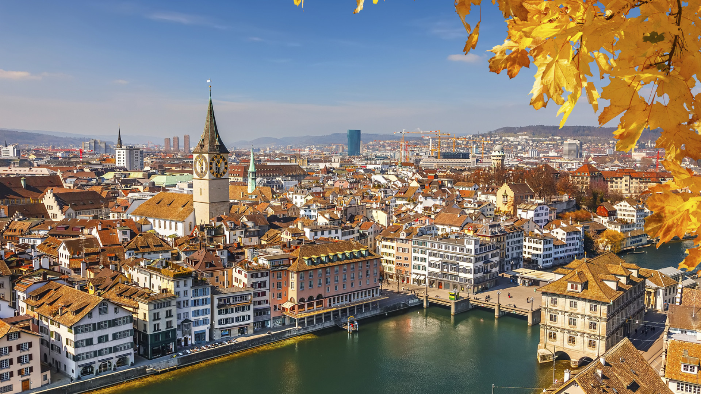
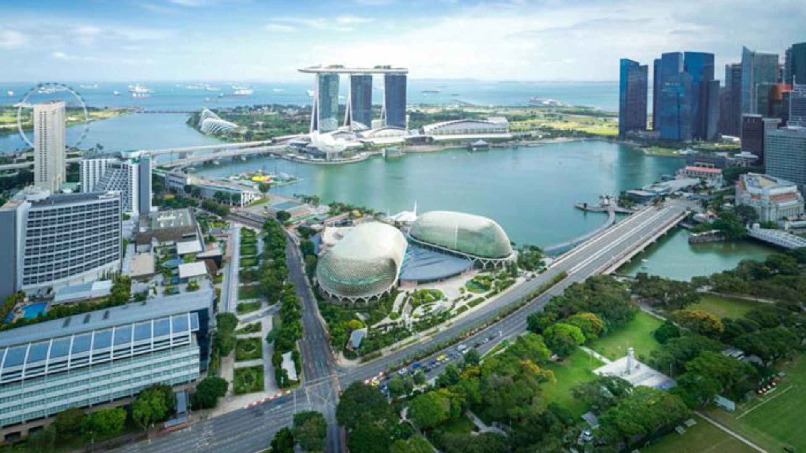
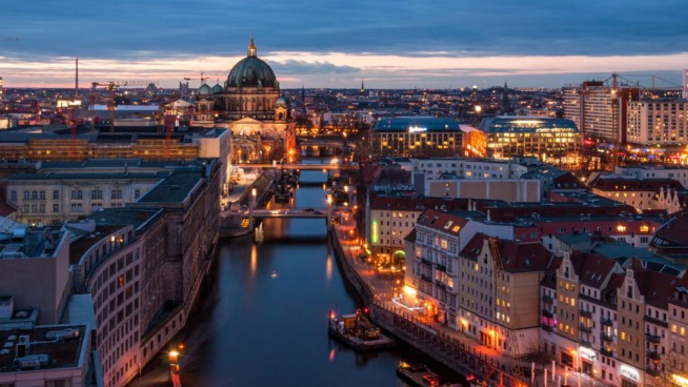

Cidades e Comunidades Sustentáveis
Como tornar as cidades e os assentamentos humanos mais inclusivos, seguros, resilientes e sustentáveis?
Projeto
A ONU e seus parceiros no Brasil estão trabalhando para atingir os Objetivos de Desenvolvimento Sustentável. São 17 objetivos ambiciosos e interconectados que abordam os principais desafios de desenvolvimento enfrentados por pessoas no Brasil e no mundo.
Os Objetivos de Desenvolvimento Sustentável são um apelo global à ação para acabar com a pobreza, proteger o meio ambiente e o clima e garantir que as pessoas, em todos os lugares, possam desfrutar de paz e de prosperidade.
Seguem alguns dos objetivos para os quais as Nações Unidas estão contribuindo para que possamos atingir a Agenda 2030 no Brasil.
Objetivos
Habitação Segura
Até 2030, garantir o acesso de todos à habitação segura, adequada e a preço acessível, e aos serviços básicos e urbanizar as favelas. Junto disso, objetiva-se, até 2030, aumentar a urbanização inclusiva e sustentável, e as capacidades para o planejamento e gestão de assentamentos humanos participativos, integrados e sustentáveis, em todos os países.
Transporte Seguro
Até 2030, proporcionar o acesso a sistemas de transporte seguros, acessíveis, sustentáveis e a preço acessível para todos, melhorando a segurança rodoviária por meio da expansão dos transportes públicos, com especial atenção para as necessidades das pessoas em situação de vulnerabilidade, mulheres, crianças, pessoas com deficiência e idosos.
Prevenção e contenção de desastres
Até 2030, reduzir significativamente o número de mortes e o número de pessoas afetadas por catástrofes e substancialmente diminuir as perdas econômicas diretas causadas por elas em relação ao produto interno bruto global, incluindo os desastres relacionados à água, com o foco em proteger os pobres e as pessoas em situação de vulnerabilidade.
Qualidade do ar
Até 2030, reduzir o impacto ambiental negativo per capita das cidades, inclusive prestando especial atenção à qualidade do ar, gestão de resíduos municipais e outro.
Espaços públicos de qualidade
Até 2030, proporcionar o acesso universal a espaços públicos seguros, inclusivos, acessíveis e verdes, particularmente para as mulheres e crianças, pessoas idosas e pessoas com deficiência.
Apoiar os países menos desenvolvidos
Apoiar os países menos desenvolvidos, inclusive por meio de assistência técnica e financeira, para construções sustentáveis e resilientes, utilizando materiais locais.
Cidades Sustentáveis pelo Mundo
O objetivo de tornar cidades e comunidades sustentáveis corresponde à ideia de evitar o esgotamento do meio ambiente e garantir um meio ambiente digno, saudável, para gerações futuras. Como a maior parte da população mundial vive em zonas urbanas, combater problemas, como a poluição (seja ela do ar, sonora, ambiental) e o desperdício de recursos naturais, tornou-se questão de relevância nesses centros populacionais.
Zurique
A cidade suíça está no topo da lista das mais sustentáveis, um exemplo de disparidade entre os índices utilizados: enquanto ocupa o 1º lugar no índice ambiental e em 5º na economia, fica em 27º no aspecto social.
Singapura
É uma cidade que possui mais de 7 mil habitantes por metro quadrado que possui 29,3% de arborização. Há de se mencionar uma importante iniciativa governamental que desenvolveu um plano de mobilidade que penaliza cada vez mais o uso de carro próprio e promove o transporte público e compartilhado.
Viena
Viena destaca-se por sua segurança, baixo preço de moradias e bom funcionamento do transporte público. Também vale destacar o projeto Smart City Vienna, que tem por objetivo alcançar uma cidade com zero emissão de carbono e autossuficiência de energia.
Sobre Mim
Patrícia F Fraga
Passei boa parte da minha vida estudando, mas nada de TI, Direito! Tenho graduação, especialização, mestrado e doutorado em Direito, mas sempre tive curiosidade para entender o que se esconde por trás das páginas coloridas da web, dos jogos, dos aplicativos. Faz algum tempo que decidi migrar de área de atuação e tentar aliar algum conhecimento jurídico que já possuo ao mundo da programação e ver no que dá. Confesso que não é um dos caminhos mais fáceis, mas parece bem gratificante, ainda mais para alguém movida por curiosidade. Uma coisa já é certa, eu não desisto das minhas metas. No mínimo, sou perseverante.